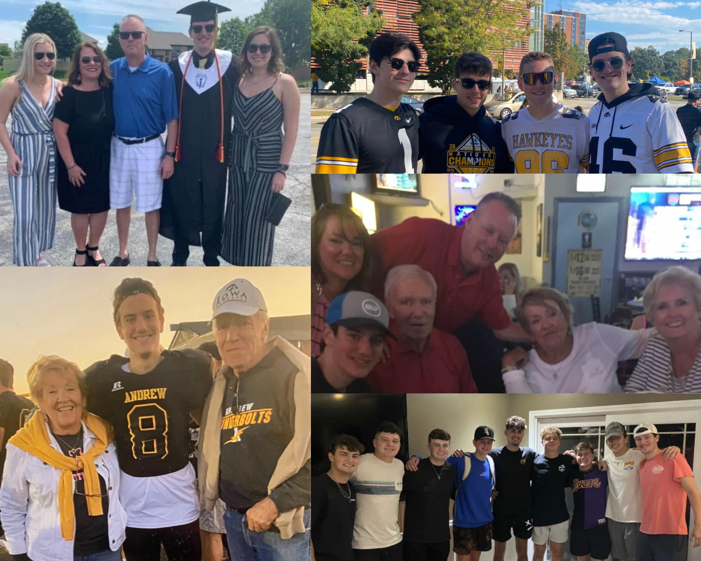

A Little Bit More About Me
Building this "professional" portfolio has shown me how hard it is to display who you are to people who may not really know you in a professional yet authentic way.
While my technical skills and knowledge are mainly highlighted,
I want you to know there's more to me.
I consider my ability to connect with people as my superpower. Whether it's being the team's
source of humor or the go-to person for solving complex problems, my interpersonal skills are what make my
technical skills shine brighter. From a young age, I was the kid who never missed a chance to talk, often noted
on my report cards with a "needs improvement in verbal self-control." Over time, I've channeled this energy
into a powerful tool.
I strive to grow and learn from every experience, aiming to become a better professional, family member,
and friend. Here are some highlights of my personal attributes:
- Engaging communicator with an innate ability to connect
- Brings humor and positivity to anything possible
- Effective in persuasion and negotiation
- Loves working with and being around others
Beyond my professional life, I'm passionate about:
- Spending time with family and friends is #1
- Going to games for the Chicago Bears, White Sox, and Iowa Hawkeyes
- Staying active and healthy by working out and playing sports
- Cooking and, of course, eating
- Keeping up the news in global events, sports, and tech
- Going to concerts and discovering new music
- Traveling to new places
- Rewatching my favorite episodes of Suits and The Sopranos
- Reading articles and journals (still working on the books part)
- Picking up new hobbies to keep life exciting and challenging
My journey is just beginning, and I'm grateful for all of the people I have in my life: my immediate and extended family, friends, roommates, current/former classmates, teachers and employers, and everyone I will meet along the way. I am trying to enjoy my time before I enter "the real world" but I am even more pumped to continue growing both personally and professionally.